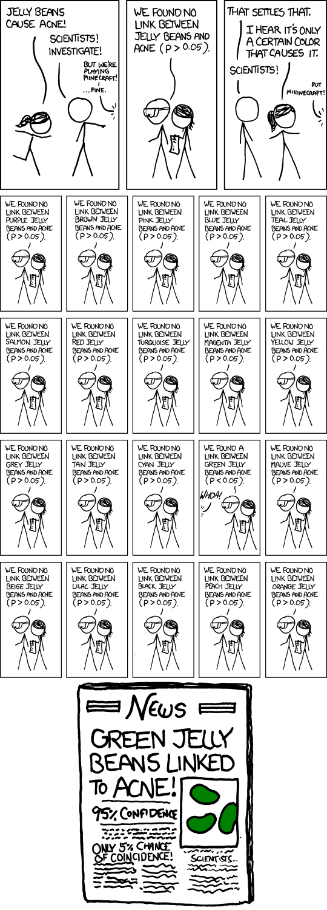
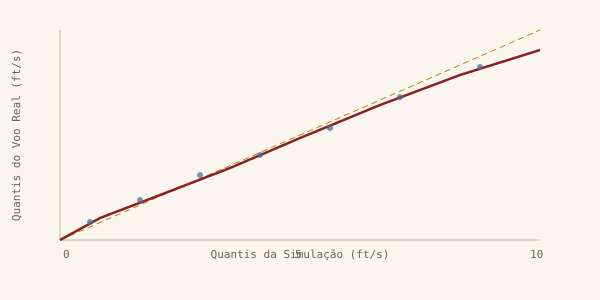

Uma Abordagem Epistemológica e Estatística — da Filosofia da Ciência aos Testes de Hipótese na Comparação Simulação vs. Voo Real
Sumário
- Fundamentos Filosóficos — Epistemologia, Hume e Popper
- Anatomia do Teste de Hipótese — H₀ e H₁
- O p-value — Desconstrução Total
- Erros Tipo I e Tipo II, Alpha e p-value
- Significância Estatística vs. Relevância Prática
- Os Problemas do p-value — Multiplicidade e p-Hacking
- Testes Estatísticos para Dinâmica de Voo
- Roteiro Prático — Comparação Voo vs. Simulação
- Conclusão — Validação Como Corroboração Provisória
Seção 1 — Fundamentos Filosóficos: Epistemologia, Hume e Popper
Antes de discutir p-values e distribuições acumuladas, é preciso perguntar uma questão mais profunda: o que significa saber alguma coisa? A inferência estatística não é um mero procedimento computacional — ela é uma resposta concreta e operacionalizável a um dos problemas mais antigos da filosofia ocidental.
O Problema da Indução e David Hume
O filósofo escocês David Hume (1711–1776) abalou os alicerces do pensamento científico com uma pergunta deceptivamente simples: o que justifica nossa crença de que o futuro se parecerá com o passado?
Hume notou que a ciência empírica baseia-se no raciocínio indutivo: observamos que o sol nasce todos os dias e concluímos que sempre nascerá. Observamos que 100 pousos de aeronaves com determinada configuração resultaram em certos valores de sink rate e construímos um modelo. Mas quantas observações justificam a generalização? Mil? Um milhão? Hume mostrou que nenhum número finito de observações pode logicamente garantir uma lei universal. A indução, por mais robusta que pareça, é sempre um salto de fé.
“Even after observing the constant conjunction of objects, we have no reason to draw any inference concerning any object beyond those of which we have had experience.”
— David Hume, An Enquiry Concerning Human Understanding (1748)
Para a validação de um simulador de voo, o problema humiano é profundamente real. Você realizou 100 voos de teste. Eles produzem dados que se alinham com o modelo computacional. Mas como saber se essa concordância não é mera coincidência ou produto de condições atmosféricas específicas daquela semana de ensaios? A indução pura não resolve o problema.
Karl Popper e a Falsificabilidade
O filósofo austríaco Karl Popper (1902–1994) propôs a solução mais influente para o problema humiano na filosofia da ciência moderna. Em vez de tentar confirmar teorias através de evidências acumuladas, Popper inverteu a lógica: o que distingue uma teoria científica de uma não-científica é sua capacidade de ser falsificada.
Uma boa teoria científica deve fazer previsões tão precisas e arriscadas que a natureza possa potencialmente contradizê-la. “Todos os pousos desta aeronave com ângulo de aproximação de 3° e velocidade de 60 kt resultarão em sink rate entre 3 e 7 ft/s” — essa afirmação é científica porque pode ser refutada por um único pouso que resulte em 10 ft/s.
“It is easy to obtain confirmations, or verifications, for nearly
every theory — if we look for confirmations. The criterion of the
scientific status of a theory is its falsifiability, or refutability, or
testability.”
— Karl Popper,
Conjectures
and Refutations (1963)
A epistemologia popperiana tem várias implicações cruciais para a engenharia aeronáutica:
- Assimetria lógica entre confirmação e refutação: mil voos bem-sucedidos não provam que o simulador é correto, mas um único resultado aberrante pode demonstrar que ele está errado.
- O papel central das hipóteses audazes: um modelo que só faz previsões vagas (“o sink rate será um valor positivo”) não é científico no sentido popperiano. Modelos úteis fazem apostas precisas.
- O progresso como corroboração provisória: dizer que o simulador é “validado” não significa que ele é verdadeiro — significa que resistiu às tentativas mais rigorosas de falsificação até o momento.
O Teste de Hipótese como Análogo Estrutural ao Método Popperiano
A estrutura do teste de hipótese estatístico atua como um análogo metodológico do método popperiano para o mundo probabilístico — mas com uma ressalva importante: o próprio Popper era cético em relação à probabilidade como fundamento epistêmico (ver nota abaixo). A analogia é estrutural, não filosófica completa. Como observações extremas ainda são logicamente possíveis sob H₀ (a probabilidade nunca é zero), adotamos uma falsificação metodológica: estabelecemos um limiar (α) e, se os dados divergirem fortemente (p < α), decidimos empiricamente refutar a teoria. Considere a correspondência ponto a ponto:
| Filosofia de Popper | Teste de Hipótese |
|---|---|
| Toda teoria científica deve ser falsificável. | H₀ é a afirmação precisa que tentaremos refutar com dados empíricos. |
| Coletamos evidências que possam contradizer a teoria. | Calculamos a estatística de teste a partir das amostras. |
| Se a evidência for incompatível o suficiente, rejeitamos a teoria. | Se p < α, rejeitamos H₀ — os dados são incompatíveis com ela. |
| Não rejeitada ≠ confirmada. A teoria sobreviveu, não foi provada. | “Falhar em rejeitar H₀” ≠ “aceitar H₀” como verdadeira. |
Nota Epistemológica
Existe uma tensão legítima: Popper era crítico da probabilidade como fundamento epistêmico (ele preferia uma interpretação de propensão de frequência). O debate entre o falibilismo popperiano e a estatística bayesiana — que atribui probabilidades diretamente a hipóteses — é um dos mais ricos da filosofia da ciência contemporânea. Retomaremos o fio bayesiano na Seção 3.3.
Seção 2 — Anatomia do Teste de Hipótese: H₀ e H₁
O Que São H₀ e H₁ — Definição e Exemplos
Antes de qualquer discussão filosófica, é necessário definir com precisão o que são as hipóteses de um teste estatístico. Todo teste de hipótese parte de uma pergunta sobre o mundo — e essa pergunta é dividida em duas afirmações concorrentes e exaustivas: a hipótese nula (H₀) e a hipótese alternativa (H₁).
H₀ — Hipótese Nula é a afirmação do status quo, da ausência de efeito, da igualdade. É sempre uma afirmação conservadora e precisa, que inclui um sinal de igualdade. É a hipótese que o experimento tentará refutar.
H₁ — Hipótese Alternativa é a afirmação que o pesquisador deseja demonstrar — que existe um efeito, uma diferença, uma relação. É a conclusão que só será aceita se os dados fornecerem evidência suficiente contra H₀.
O raciocínio é deliberadamente assimétrico: começamos assumindo que H₀ é verdadeira e só a abandonamos se os dados tornarem essa premissa implausível. Essa assimetria tem raízes tanto filosóficas (o princípio da parcimônia) quanto matemáticas (precisamos de uma distribuição de referência exata para calcular probabilidades).
Analogia Jurídica
H₀ é o equivalente à presunção de inocência no tribunal. O réu (o modelo, o medicamento, a hipótese) é presumido inocente até que se prove o contrário além de dúvida razoável. O nível de significância α é o “limiar da dúvida razoável” que o sistema aceita.
Exemplos nas Áreas Médica e Aeronáutica
| Área Médica | Área Aeronáutica | |
|---|---|---|
| Pergunta | Este novo anticoagulante reduz trombose em comparação ao placebo? | O simulador de voo produz o mesmo sink rate que os voos reais? |
| H₀ | A taxa de trombose no grupo tratado é igual à do grupo controle. H₀: μ_droga − μ_placebo = 0 | A média do sink rate simulado é igual à média do voo real. H₀: μ_sim − μ_voo = 0 |
| H₁ | A taxa de trombose no grupo tratado é diferente (menor) da do grupo controle. H₁: μ_droga − μ_placebo ≠ 0 | Existe uma diferença sistemática entre simulação e voo real. H₁: μ_sim − μ_voo ≠ 0 |
| Se rejeitamos H₀ | Concluímos que a droga tem efeito e avançamos para aprovação regulatória. | Concluímos que o modelo tem viés sistemático e requeremos revisão antes da certificação. |
| Risco de Erro Tipo I (α) | Aprovar uma droga ineficaz — pacientes sofrem efeitos colaterais sem benefício. | Rejeitar um modelo correto — retrabalho desnecessário, atraso de certificação. |
| Risco de Erro Tipo II (β) | Não detectar o efeito real da droga — pacientes perdem acesso a tratamento eficaz. | Não detectar o viés do modelo — estrutura dimensionada incorretamente. |
Por Que H₀ Deve Abrigar o Sinal de Igualdade
Esta é uma exigência matemática, não uma convenção arbitrária. Para calcular a probabilidade de um resultado, precisamos de uma distribuição de referência — uma curva que nos diga o quão provável cada resultado possível seria. Para construir essa curva, precisamos de um parâmetro central exato.
Se H₀ fosse “os modelos são diferentes” (H₀: μ_sim ≠ μ_voo), o parâmetro central seria indefinido — a diferença poderia ser de 0,001 ft/s ou de 50 ft/s. Infinitas curvas seriam compatíveis com essa hipótese, e o cálculo de probabilidade colapsaria. O sinal de igualdade fornece o valor exato (zero) necessário para ancorar a distribuição nula.
Atenção Técnica
A conclusão correta ao não rejeitar H₀ é “não há evidência suficiente contra H₀ com este tamanho de amostra e nível de significância”, não “provamos que o simulador é perfeito”. A impossibilidade de provar H₀ — e não apenas deixar de rejeitá-la — é um corolário direto da epistemologia popperiana.
Analogia com o Ensaio Clínico de Drogas — e Seus Limites
A analogia farmacológica é poderosa porque o risco em jogo é imediatamente intuitivo. Imagine que um laboratório desenvolve um novo anticoagulante para pacientes pós-cirúrgicos. Antes de qualquer ensaio, o médico não “acredita” na droga — o status quo é que ela não tem efeito diferente do placebo.
Em termos práticos: o grupo tratado recebeu a droga e apresentou 3 casos de trombose em 100 pacientes. O grupo controle apresentou 11 casos em 100. A diferença é de 8 pontos percentuais. Poderia isso ter ocorrido por acaso, mesmo que a droga fosse inerte? O teste estatístico responde exatamente essa pergunta — calculando a probabilidade de observar uma diferença tão grande ou maior em um mundo onde a droga não tem efeito algum.
Na medicina, a assimetria moral favorece a segurança do paciente: é pior aprovar uma droga nociva do que rejeitar uma potencialmente útil. H₀ (“a droga é inerte”) é exatamente o status quo conservador que se quer derrubar com evidência. O teste estatístico trabalha a favor da segurança: para declarar que a droga funciona, é preciso evidência forte contra H₀.
⚠️ A Armadilha Aeronáutica
Na validação de simuladores, a estrutura lógica é oposta. H₀ é “o modelo é correto” — o status quo conservador é aprovar o modelo, não rejeitá-lo. Isso significa que, no teste clássico, a matemática joga contra a segurança: um modelo ruim com amostras pequenas produz p alto e não é rejeitado. A analogia com o ensaio clínico quebra aqui. A solução rigorosa — inverter as hipóteses com o TOST, de modo que H₀ passe a ser “o modelo é perigoso” — é discutida na Seção 4.
Conexão com a Epistemologia Popperiana
Agora que H₀ e H₁ estão definidas com clareza, a ligação filosófica se torna evidente. O teste de hipótese é a operacionalização matemática da falsificação popperiana: H₀ é a teoria científica que colocamos à prova. Coletamos dados que poderiam contraditá-la. Se os dados forem suficientemente incompatíveis com H₀ (p < α), rejeitamos a hipótese — não porque provamos H₁, mas porque tornamos H₀ insustentável.
Da mesma forma que Popper insistia que “não rejeitar” uma teoria não significa confirmá-la, “não rejeitar H₀” não significa provar que o simulador é perfeito. O modelo simplesmente sobreviveu ao teste — até que dados mais abundantes ou mais rigorosos possam refutá-lo.
Seção 3 — O p-value: Desconstrução Total
Definição Rigorosa e Erros Comuns
O p-value é talvez a estatística mais citada e mais mal compreendida de toda a ciência empírica. A American Statistical Association emitiu em 2016 uma declaração formal sobre seu uso — um fato notável, indicativo de quão profundo o problema de interpretação se tornou.
🚫 O que o p-value NÃO é
- Não é a probabilidade de H₀ ser verdadeira.
- Não é a probabilidade de os resultados terem
ocorrido “por acaso”.
- Não é a probabilidade de H₁ ser verdadeira.
- Não é uma medida da magnitude prática do erro do
modelo.
- Não é uma medida de importância ou relevância científica.
A definição correta, estrita e irrefutável:
O p-value é a probabilidade de se observar uma estatística de teste tão extrema quanto a obtida, ou mais extrema, assumindo que a hipótese nula é absolutamente verdadeira.
Definição Formal:
p = P(|T| ≥ |t_obs| | H₀ verdadeira)
Onde:
T = estatística de teste (variável aleatória)
t_obs = valor observado da estatística nos seus dados
H₀ = hipótese nula (assume-se 100% verdadeira para o cálculo)Dissecando cada componente com o exemplo do simulador (média Monte Carlo = 5,0 ft/s; média voo = 6,1 ft/s):
- “Assumindo que H₀ é absolutamente verdadeira”: Construímos um universo mental contrafactual onde o modelo é perfeito. Nesse universo, a diferença real entre simulação e voo é zero.
- “A probabilidade de se observar os dados…”: Nesse universo perfeito, realizamos o ensaio imaginariamente um número enorme de vezes. Cada repetição produzirá uma diferença ligeiramente diferente por pura variabilidade amostral.
- “…tão extrema ou mais extrema”: Perguntamos: em quantas dessas repetições imaginárias a diferença acidentalmente seria de 1,1 ft/s ou mais? Se essa proporção for pequena, os dados reais são incompatíveis com a hipótese de modelo perfeito.
Interpretação Frequentista
A escola frequentista — que inclui Fisher, Neyman e Pearson — interpreta probabilidade como frequência relativa em uma longa sequência de repetições idênticas. Nessa tradição, o p-value tem uma interpretação operacional precisa:
Se o mesmo experimento fosse repetido 1.000 vezes em um mundo onde H₀ fosse verdadeira, esperaríamos que em aproximadamente p × 1000 dessas repetições a estatística de teste fosse tão extrema quanto a observada.
Para p = 0,02: em 1.000 repetições hipotéticas do ensaio em voo com um simulador perfeito, esperaríamos que em apenas ~20 dessas repetições a diferença das médias fosse tão grande (ou maior) que a diferença observada de 1,1 ft/s. Como observamos exatamente esse resultado, ou o mundo escolheu um evento de 2% de probabilidade para acontecer (improvável), ou nossa premissa (modelo perfeito) está errada.
A interpretação frequentista tem implicações práticas importantes:
- O p-value não é fixo: ele depende do tamanho da amostra. Com 10.000 voos (em vez de 100), uma diferença de 0,01 ft/s pode produzir p < 0,001. Com 5 voos, uma diferença de 3 ft/s pode produzir p = 0,4. O p-value confunde efeito e precisão da estimativa.
- Ausência de probabilidade para hipóteses: na visão frequentista, H₀ é verdadeira ou falsa — não tem probabilidade. O p-value é uma propriedade do procedimento, não da hipótese.
A Perspectiva Bayesiana
Os bayesianos partem de um ponto radicalmente diferente: probabilidade é uma medida de grau de crença, não de frequência. Isso permite uma coisa que o frequentismo proíbe: atribuir probabilidade diretamente a hipóteses.
O teorema de Bayes, aplicado à validação do simulador:
P(H₀ | dados) = P(dados | H₀) × P(H₀) / P(dados)
Onde:
P(H₀) = probabilidade a priori de que o modelo seja correto
P(dados | H₀) = likelihood (verossimilhança) — relacionado ao p-value
P(H₀ | dados) = probabilidade a posteriori — o que queremos saberA diferença fundamental: no framework bayesiano, podemos dizer “dada a evidência dos 100 voos, a probabilidade de que o modelo seja correto é de 15%”. No framework frequentista, essa afirmação é semanticamente proibida.
Tensão Filosófica
O bayesianismo oferece uma das respostas mais influentes ao problema humiano: a crença se atualiza continuamente com novas evidências, o que muitos filósofos consideram mais natural do que o frequentismo — embora o próprio Popper contestasse essa visão. Mas o bayesianismo introduz uma controvérsia prática: como determinar a probabilidade a priori P(H₀)? Se dois engenheiros têm diferentes prioris — um altamente confiante no modelo, outro cético — chegam a conclusões diferentes com os mesmos dados. Para a certificação aeronáutica, onde a objetividade é mandatória, isso é problemático. Por isso o framework frequentista (com toda sua imperfeição filosófica) domina a prática regulatória. Essa objeção aos priors, registre-se, não invalida o insight bayesiano: apenas transfere o conservadorismo exigido pela certificação para outro lugar, e é precisamente lá que os critérios de equivalência da Seção 4 o recuperam, substituindo a opinião a priori sobre o modelo pela prova ativa de equivalência.
Exemplos Numéricos Concretos
Considere os quatro cenários abaixo, todos referentes à mesma comparação (simulação vs. voo) mas com resultados diferentes:
Cenário A — p = 0,02
Rejeita H₀ com α = 0,05. Em um mundo de modelo
perfeito, esta diferença ocorreria por acaso em apenas 2% das
repetições. Evidência forte de divergência sistemática. O engenheiro
deve investigar a física do modelo.
Cenário B — p = 0,06
Não rejeita H₀ com α = 0,05, mas muito próximo. A
diferença poderia ocorrer em 6% das repetições. Tecnicamente não
significativo, mas borderline: prudência aconselha investigação
adicional antes da certificação.
Cenário C — p = 0,40
Não rejeita H₀. A diferença observada ocorreria em 40%
das repetições por pura sorte. Boa concordância estatística. O modelo
não foi refutado pelos dados disponíveis — embora isso não
prove que seja perfeito.
Cenário D — p = 0,80
Excelente concordância. A diferença entre simulação e
voo é completamente consistente com variabilidade aleatória normal. Em
80% das repetições hipotéticas, obteríamos uma discrepância tão grande
ou maior. O modelo passa este teste com folga.
Seção 4 — Erros Tipo I e Tipo II, Alpha e p-value
A Aritmética do Risco Epistêmico
Quando tomamos uma decisão binária — rejeitar ou não rejeitar H₀ — a realidade subjacente é também binária: H₀ é verdadeira ou falsa. Isso cria quatro resultados possíveis, dois dos quais são erros.
| H₀ Verdadeira (modelo correto) | H₀ Falsa (modelo com viés) | |
|---|---|---|
| Não rejeitamos H₀ | ✓Decisão Correta — Probabilidade: 1 − α | ✗Erro Tipo II (β) — Aprovamos modelo defeituoso |
| Rejeitamos H₀ | ✗Erro Tipo I (α) — Rejeitamos modelo correto | ✓Decisão Correta — Probabilidade: 1 − β (Poder) |
Para garantir que a tabela acima seja legível: as linhas representam nossa decisão (o que concluímos); as colunas representam a realidade (o que é verdadeiro). Os dois quadrantes diagonais são acertos; os dois fora da diagonal são erros com nomes distintos e consequências distintas.
Erro Tipo I (α) — O Falso Alarme
Ocorre quando rejeitamos H₀ sendo que ela era verdadeira. No contexto aeronáutico: concluímos que o simulador tem um viés sistemático, geramos um ciclo de retrabalho de engenharia, atrasamos a certificação e gastamos recursos — mas o modelo estava correto desde o início. O nível de significância α é, literalmente, a probabilidade que estamos dispostos a aceitar de cometer esse erro.
Erro Tipo II (β) — O Falso Negativo
Ocorre quando não rejeitamos H₀ sendo que ela era falsa. No contexto aeronáutico: aprovamos um modelo com viés sistemático, o trem de pouso é dimensionado com base em cargas incorretas e portanto pode ocorrer falha estrutural. A probabilidade β depende da magnitude do viés real, do tamanho da amostra e do nível α escolhido.
O Trade-off Fundamental
α e β são antagônicos: reduzir α (exigir mais evidência para rejeitar H₀) aumenta β (torna mais fácil deixar passar um modelo defeituoso). Isso é análogo ao sistema jurídico: para reduzir a probabilidade de condenar um inocente (α), aceita-se uma probabilidade maior de absolver culpados (β). Na aviação, onde o Erro Tipo II tem consequência “catastrófica”, mantemos α razoável (0,05) mas investimos em amostras maiores para reduzir β via aumento do poder estatístico.
A Tensão entre Alpha, Erro Tipo I e p-value
Esta é uma das confusões mais comuns — e mais perigosas — em estatística aplicada. Os três conceitos (α, Erro Tipo I e p-value) estão intimamente relacionados, mas operam em registros lógicos distintos. Entendê-los juntos é fundamental para não cometer o erro de interpretação mais frequente na literatura científica.
O que é Alpha (nível de significância)?
Alpha é um limiar de decisão pré-definido, escolhido antes de ver os dados. Ele representa a taxa máxima de falsos alarmes que o pesquisador ou organismo regulatório está disposto a tolerar em um procedimento de decisão repetido ao longo do tempo. Ao definir α = 0,05, você está dizendo: “se este experimento for repetido infinitas vezes em mundos onde H₀ é verdadeira, eu estou disposto a rejeitar H₀ incorretamente em no máximo 5% das vezes.”
Há uma propriedade crucial aqui: alpha é uma propriedade do procedimento de decisão, não do experimento em si. É como a taxa de defeitos tolerável em uma linha de produção. Não diz nada sobre se esta peça específica é defeituosa — diz que o sistema de inspeção foi calibrado para rejeitar 5% das peças boas.
O que é Erro Tipo I?
O Erro Tipo I é o evento de rejeitar H₀ quando ela é verdadeira em uma realização específica do experimento. É o erro em si — não a sua taxa. α é a taxa de ocorrência desse erro no longo prazo. A relação é:
P(Erro Tipo I) = α
Ou seja:
P(Rejeitar H₀ | H₀ verdadeira) = α
Esta probabilidade é avaliada sobre a distribuição amostral de T,
não sobre este experimento específico.O que é o p-value e como se relaciona com alpha?
O p-value é calculado após ver os dados. Ele é a probabilidade — assumindo H₀ verdadeira — de obter uma estatística de teste tão extrema ou mais extrema do que a observada. É uma medida de compatibilidade entre os dados e H₀.
A regra de decisão é simples: se p < α, rejeitar H₀. Mas o insight profundo é que essa comparação só tem sentido porque α foi definido antes de ver os dados. Se você define α depois de ver o p-value — por exemplo, se o resultado foi p = 0,03 e então você declara α = 0,05 — o procedimento perde seu fundamento lógico e a taxa de Erro Tipo I já não é controlada.
🚫 A Confusão Fatal
Quando dizemos “p < α, rejeitamos H₀”, não estamos dizendo que H₀ tem probabilidade α de ser verdadeira. Não estamos dizendo que a probabilidade de estarmos errados é α. Estamos dizendo que usamos um procedimento de decisão que, repetido no longo prazo em mundos onde H₀ é verdadeira, erraria em α × 100% das vezes. A probabilidade que α quantifica é sobre o procedimento ao longo do tempo, não sobre esta hipótese neste experimento.
Exemplo Concreto: Por que Isso Importa
Um engenheiro entrega o relatório: “o teste K-S produziu p = 0,03, rejeitamos H₀ com α = 0,05.” Qual é a probabilidade de que o simulador seja, na verdade, válido — e estejamos cometendo um Erro Tipo I?
A resposta que o framework frequentista permite é apenas: “se o simulador fosse válido, a probabilidade de obter p ≤ 0,03 seria de 3%.” Não podemos dizer “há 3% de chance de estarmos errados neste caso”. Para isso, precisaríamos de probabilidade a priori sobre H₀ — e entramos no território bayesiano.
Agora, invertamos o cenário empírico. O engenheiro entrega o relatório: “O teste K-S da taxa de afundamento retornou p = 0,40; logo, falhamos em rejeitar H₀.” O paradigma frequentista diz-nos estritamente o seguinte: “Se o modelo teórico fosse absolutamente exato, observaríamos desvios desta magnitude (ou maiores) em 40% das campanhas de ensaio, puramente devido ao ruído dos sensores, turbulência ou variabilidade inerente.”
A interpretação que frequentemente (e perigosamente) ocorre é a ilusão da corroboração. A tentação cognitiva é ler p = 0,40 como “o modelo é excelente, os dados confirmam a teoria” ou, pior, “há 40% de probabilidade de o simulador ser perfeito”.
Este é um salto lógico fatal. A ausência de evidência de erro não é evidência de perfeição. Um p-valor de 0,40 pode surgir não porque o modelo aerodinâmico é perfeito, mas sim porque as amostras são pequenas ou porque existem erros na medição das variáveis de ensaio.
Como a falha em identificar um modelo ruim repousa no Erro Tipo II (β), testes estatísticos padrão premiam amostras pequenas. A solução mais rigorosa é o procedimento TOST (Two One-Sided Tests), que inverte as hipóteses: H₀ passa a declarar que “o erro do simulador é inaceitavelmente grande”. Com isso, a amostra precisa ser grande o suficiente para comprovar (com confiança 1-α) que o modelo é estatisticamente aceitável e equivalente aos dados de ensaio em voo.
Estrutura de Hipóteses do TOST (Schuirmann, 1987):
H₀₁: O erro do modelo é ≤ −Δ (Subestimação inaceitável)
H₀₂: O erro do modelo é ≥ +Δ (Superestimação inaceitável)
H₁ (Equivalência): O erro está contido no intervalo aberto (−Δ, +Δ)
Nota: os sinais de ≤ e ≥ são essenciais — H₀ deve abrigar o sinal de
igualdade (ver §2.2) para que a distribuição de referência seja ancorada
num valor exato. Antes do mecanismo, a calibração. O valor de Δ é decisão de engenharia, nunca estatística, e o exemplo de 0,5 ft/s no sink rate de toque ajuda a fixar a intuição. Um trem de pouso dimensionado para a condição nominal de 8 ft/s e certificado com margem de 1,5× suporta até 12 ft/s; um viés sistemático do simulador não gasta essa margem de uma vez, ele a subtrai silenciosamente em todos os cenários, sempre na mesma direção, porque desloca junto todas as cargas previstas. Em componentes regidos por fadiga, o efeito se amplifica: a vida útil cai com a tensão elevada a expoentes tipicamente entre 3 e 5, e pequenos deslocamentos sistemáticos de carga se acumulam ao longo de milhares de ciclos de pouso. Declarar Δ no protocolo é, portanto, traduzir a folga estrutural remanescente em um número verificável antes que dado algum exista.
Para que o simulador seja validado, os dados empíricos precisam ter poder estatístico suficiente para rejeitar ambas as hipóteses nulas simultaneamente. O ônus da prova passa a ser do engenheiro: assumimos que o modelo é inaceitável até que se prove o contrário com alta confiança empírica (1-α).
O mecanismo de decisão merece exposição explícita, porque a hipótese composta H₀: |θ| ≥ Δ não é testada diretamente. Ela se decompõe em dois testes unilaterais executados sobre o mesmo dado: um afasta o erro do limite inferior, o outro o afasta do superior, e a equivalência só é declarada quando ambos rejeitam suas nulas simultaneamente. Com θ denotando a diferença média simulador menos voo e SE o erro padrão dessa estimativa:
H₀: |θ| ≥ Δ (erro fora da zona aceitável)
H₁: |θ| < Δ (equivalência)
Decomposição (dois testes unilaterais, nível α):
H₀₁: θ ≤ −Δ vs. H₁₁: θ > −Δ t₁ = (θ_obs + Δ) / SE
H₀₂: θ ≥ +Δ vs. H₁₂: θ < +Δ t₂ = (Δ − θ_obs) / SE
Equivalência declarada somente se t₁ e t₂ superarem
simultaneamente o valor crítico t de Student. Um exemplo numérico completo mostra a máquina funcionando. Sejam Δ = 0,5 ft/s no sink rate, diferença observada θ_obs = 0,12 ft/s, desvio-padrão amostral s = 1,5 ft/s e n = 100 voos. O erro padrão vale SE ≈ s/√n = 1,5/10 = 0,15 ft/s, e as estatísticas saem:
t₁ = (0,12 + 0,50) / 0,15 ≈ 4,1
t₂ = (0,50 − 0,12) / 0,15 ≈ 2,5
Os dois p-values unilaterais ficam abaixo de 0,025, portanto
rejeitamos H₀₁ e H₀₂: o viés do simulador está confinado em
(−0,5, +0,5) ft/s com confiança de 95%. Existe uma identidade que comprime o procedimento em uma única checagem: o TOST com nível α equivale a exigir que o intervalo de confiança de (1 − 2α) da diferença esteja inteiramente contido em (−Δ, +Δ). Com α = 0,05, basta verificar se o IC 90% cai dentro da zona de equivalência. No exemplo, o IC 90% vale 0,12 ± 1,66 × 0,15 ≈ (−0,13, +0,37) ft/s, contido com folga em (−0,5, +0,5), e a conclusão coincide com a dos dois testes, como a teoria garante.
Validação Epistemológica: O TOST Fere Karl Popper?
À primeira vista, o TOST parece cometer o pecado epistemológico do verificacionismo ao tentar “comprovar” a equivalência em H₁. No entanto, ele preserva e refina o rigor popperiano através do conceito de versimilitude.
O TOST reconhece a máxima de que todo modelo matemático é ontologicamente falso. Ele não tenta provar a premissa impossível de que “o simulador é idêntico à realidade”. Em vez disso, o TOST usa o falsificacionismo metodológico para falsificar o perigo.
Ao rejeitarmos ativamente a hipótese de que o modelo é pior que o limite inferior, e rejeitarmos que é pior que o limite superior, a equivalência não se torna uma “verdade absoluta provada”, mas sim a constatação de que a teoria (o modelo) sobreviveu a tentativas severas de demonstrar que o seu erro excede o aceitável. A filosofia falsificacionista permanece intacta, mas a segurança estrutural ganha o rigor necessário para a aviação.
⚠️ IMPORTANTE
O rigor do TOST tem preço, e convém declará-lo abertamente: provar equivalência exige amostras bem maiores do que falhar em detectar diferenças, e cada ensaio em voo adicional custa caro, de modo que o orçamento de uma campanha limita até onde essa prova pode ser levada. Esse custo prático é real, mas não absolve os testes tradicionais do defeito diagnosticado nesta seção. Um p > 0,05 ou um intervalo de confiança contendo zero continua demonstrando apenas insuficiência de evidência, e lê-lo como aprovação reintroduz a ilusão da corroboração com outra grafia. Compatibilizar o método com o orçamento não pede que se relaxe a lógica, e sim que se calibre Δ com honestidade: com 100 voos, número razoável na prática, comprova-se equivalência apenas para margens relativamente largas. Cabe ao julgamento de engenharia decidir se a margem comprovável é estreita o suficiente para o componente em análise. Onde não é, a resposta correta do protocolo é “ainda não validado”, e não o passe automático que a fraqueza do teste tradicional costuma conceder.
Seção 5 — Significância Estatística vs. Relevância Prática
Um dos erros mais disseminados na aplicação de testes estatísticos é confundir significância estatística com relevância prática. São conceitos completamente distintos. Um resultado pode ser altamente significativo estatisticamente e ser irrelevante na prática. E pode ser irrelevante estatisticamente por falta de poder, mas ter enorme importância operacional.
O Papel do Tamanho de Amostra
O p-value não mede a magnitude de um efeito — ele mede a precisão com que detectamos qualquer efeito. Com amostras pequenas, diferenças grandes podem ser invisíveis (p alto). Com amostras imensas, diferenças ínfimas se tornam “estatisticamente significativas” (p baixo). O tamanho da amostra é o amplificador do sinal estatístico.
A Dependência do p-value com N:
Para o [teste t de Welch](https://pt.wikipedia.org/wiki/Teste_t_de_Welch), a estatística de teste é:
t = (X̄₁ − X̄₂) / SE
Onde SE (erro padrão da diferença de duas médias) = √(σ₁²/n₁ + σ₂²/n₂)
No caso assimétrico (ex: n₁ = 100 voos, n₂ = 5.000 Monte Carlo, σ₁ ≈ σ₂ = σ):
SE ≈ √(σ²/100 + σ²/5000) ≈ σ/√100 = σ/10 [o termo 5000 é negligenciável]
Portanto: t ≈ (X̄₁ − X̄₂) × √n_min / σ [limitado pela amostra menor]
Conclusão: para uma diferença física δ = X̄₁ − X̄₂ FIXA,
a estatística t — e portanto o p-value — depende de √n_min.
Aumente n suficientemente e qualquer δ > 0 se tornará "significativo".Exemplo Detalhado: 100 Voos vs. 1.000 Voos
Considere o mesmo viés real do simulador — digamos, uma diferença média de 0,12 ft/s no sink rate. O simulador superestima sistematicamente o sink rate em 0,12 ft/s. É uma diferença real, mensurável, física. A questão é: essa diferença importa?
Cenário A — 100 pontos de voo: Com n = 100 e desvio-padrão típico de 1,5 ft/s, o erro padrão da diferença das médias é aproximadamente 1,5/√100 = 0,15 ft/s. A diferença de 0,12 ft/s é menor que o próprio erro padrão. O teste produz p ≈ 0,42 — não rejeitamos H₀. O simulador “passa no teste”.
Cenário B — 1.000 pontos de voo: O mesmo desvio-padrão de 1,5 ft/s, mas agora o erro padrão é 1,5/√1.000 ≈ 0,047 ft/s. A diferença de 0,12 ft/s é agora 2,5 vezes maior que o erro padrão. O teste produz p ≈ 0,011 — rejeitamos H₀. O simulador “falha no teste”.
Fizemos o mesmo experimento físico, com o mesmo simulador, com o mesmo viés de 0,12 ft/s. O resultado estatístico mudou completamente — não porque o simulador mudou, mas porque nosso poder de detecção aumentou. Isso ilustra que o p-value é uma função do tamanho amostral tanto quanto do efeito real.
⚠️ Mas 0,12 ft/s Importa Engenheiramente?
Depende do contexto. Em um trem de pouso certificado para suportar sink rates de até 12 ft/s com margem de segurança de 1,5x, um viés sistemático de 0,12 ft/s representa 1% do valor de projeto. Isso é provavelmente desprezível — o modelo é estatisticamente diferente da realidade, mas praticamente equivalente para fins de dimensionamento estrutural. Por outro lado, para algum componente dimensionado com tolerâncias de fadiga extremamente apertadas, um viés sistemático de 0,12 ft/s pode representar uma redução significativa na vida útil projetada. A mesma diferença pode ser irrelevante em um contexto e relevante em outro.
O Conceito de Tamanho de Efeito
A solução para essa ambiguidade é separar dois relatórios distintos no protocolo de validação:
- Teste de hipótese: “Existe alguma diferença detectável com nossa amostra?” → respondido pelo p-value e pela decisão de rejeitar/não rejeitar H₀.
- Estimativa do efeito: “Qual é a magnitude da diferença e qual é nossa incerteza sobre ela?” → respondido pelo intervalo de confiança da diferença e pelo tamanho de efeito padronizado.
O intervalo de confiança tem uma vantagem decisiva sobre o p-value: ele comunica simultaneamente a direção, a magnitude e a incerteza do efeito. No Cenário A acima, o IC 95% da diferença seria aproximadamente (−0,18 ft/s, +0,42 ft/s) — inclui zero, então não rejeitamos H₀, mas também vemos que a diferença real poderia ser tão grande quanto 0,42 ft/s, o que pode ser engenheiramente relevante. No Cenário B, o IC 95% seria (0,028 ft/s, 0,212 ft/s) — exclui zero (p < 0,05) e toda a faixa plausível de viés é pequena, confirmando que a diferença, embora real, é modesta.
Recomendação de Prática
Todo relatório de validação deve reportar: (1) a decisão binária do teste (p-value e comparação com α), (2) o intervalo de confiança da diferença, e (3) uma avaliação explícita da relevância prática à luz dos critérios de aceitação de projeto. O p-value sem o contexto de magnitude é insuficiente.
Seção 6 — Os Problemas do p-value: Multiplicidade e p-Hacking
O p-value, quando usado com rigor metodológico, é uma ferramenta legítima. Mas a prática científica está repleta de armadilhas que distorcem sistematicamente os resultados — às vezes de forma inconsciente. Esta seção aborda o problema mais fundamental: o que acontece quando você repete o mesmo experimento muitas vezes?
O Problema da Comparações Múltiplas
Suponha que você define α = 0,05 e executa um único teste. A probabilidade de um Erro Tipo I (falso alarme) é 5% — aceitável. Mas e se você executar 20 testes independentes sobre o mesmo conjunto de dados? A probabilidade de que pelo menos um deles produza p < 0,05 puramente por acaso é:
P(pelo menos 1 falso alarme em k testes) = 1 − (1 − α)^k
Para α = 0,05 e k = 20 testes:
P = 1 − (0,95)^20 ≈ 1 − 0,358 = 0,642
Ou seja: 64,2% de chance de encontrar pelo menos um resultado
"significativo" mesmo se nenhum efeito real existir.Isso não é uma falha moral — é matemática pura. Cada teste individualmente tem 5% de chance de falso positivo. Ao empilhar 20 testes, a taxa de erro acumulada sobe dramaticamente. Este é o problema da multiplicidade de testes, também chamado de inflação do Erro Tipo I.
O xkcd que Resume Tudo
A tira do webcomic xkcd (#882 — “Significant”) ilustra este problema com precisão cirúrgica — e humor. Cientistas testam 20 cores de jujubas separadamente, encontram que as jujubas verdes causam acne com p < 0,05, e um jornal publica a manchete como se fosse uma descoberta. A faixa de rodapé de cada painel diz, repetidamente, “não encontramos ligação (p > 0,05)” — mas o resultado positivo inevitável em 20 tentativas vira a notícia.

Tira xkcd #882 — “Significant” (Randall Munroe) · Licença Creative Commons BY-NC 2.5.
O que a tira captura é o seguinte: quando α = 0,05, esperamos que 1 em cada 20 testes produza um resultado “significativo” por puro acaso. Se você testar 20 hipóteses (20 cores de jujuba, 20 subgrupos de pacientes, 20 parâmetros de voo), encontrará aproximadamente 1 resultado positivo — mesmo que nenhum efeito real exista. Se você reportar apenas o resultado positivo e ignorar os 19 negativos, estará enganando o leitor.
p-Hacking: A Busca Involuntária por Significância
p-Hacking é o termo para um conjunto de práticas — frequentemente inconscientes — que aumentam artificialmente a probabilidade de obter p < 0,05. As formas mais comuns incluem:
- Teste sequencial sem correção: coletar dados em lotes e testar após cada lote, parando quando p < 0,05. Isso infla massivamente o Erro Tipo I.
- Seleção de variáveis: testar múltiplas medidas e reportar apenas a que “deu significativa”.
- Exclusão post-hoc de outliers: remover pontos discrepantes até que o p-value cruze o limiar.
- Análise de subgrupos: segmentar os dados (por faixa etária, condição de vento, piloto) e reportar apenas o subgrupo onde p < 0,05.
O Problema da Reprodutibilidade
A combinação de testes múltiplos, p-hacking e viés de publicação (revistas publicam resultados positivos) gerou a crise de reprodutibilidade nas ciências. Um estudo publicado em 2015 na revista Science — o “Reproducibility Project” — tentou replicar 100 estudos de psicologia publicados com p < 0,05. Apenas 39 replicaram com p < 0,05 no mesmo sentido do estudo original. Isso não significa que 61% eram fraudulentos — significa que o sistema de inferência estava mal calibrado.
Para a engenharia aeronáutica, a lição é direta: um protocolo de validação preciso deve especificar, antes de ver os dados, quais testes serão aplicados, com quais limiares, e qual critério de aceitação final. Esse pré-registro do protocolo é o equivalente da hipótese popperiana audaciosa — ela existe antes da evidência, e não é modificada depois de ver o resultado.
Correções para Comparações Múltiplas
As correções mais usadas são: Bonferroni (dividir α pelo número de testes — conservadora), Benjamini-Hochberg (controla a taxa de descobertas falsas — menos conservadora, mais poderosa), e Holm-Bonferroni (sequencial, equilíbrio entre conservadorismo e poder). Em contextos regulatórios aeronáuticos, a abordagem mais segura é declarar explicitamente o conjunto completo de testes e o critério de aceitação antecipadamente — como na Seção 8 deste documento.
Seção 7 — Testes Estatísticos para Comparação de Distribuições em Dinâmica de Voo
A crise de reprodutibilidade termina, para o validador de simuladores, em uma prescrição concreta: escolher testes adequados ao formato físico dos dados e declará-los antes da coleta. Este catálogo reúne os candidatos para a comparação de distribuições em dinâmica de voo. Parâmetros como sink rate são fisicamente limitados (não negativos), assimétricos (caudas pesadas à direita), e multivariados — a assunção gaussiana falha. Precisamos de testes robustos ao formato real da distribuição.
Kolmogorov–Smirnov (K-S de Duas Amostras)
Compara as ECDFs das duas populações. A estatística D é a máxima diferença vertical entre as curvas acumuladas. Sensível ao centro da distribuição; menos sensível às caudas. Ideal para detectar desvios sistemáticos globais de localização e forma.
Não-paramétrico · Global
Anderson–Darling (A-D de Duas Amostras)
Evolução do K-S com função de peso que amplifica discrepâncias nas caudas. A estatística A² integra o erro quadrático ponderado ao longo de toda a ECDF. Útil para parâmetros estruturais, por exemplo, onde as caudas extremas dimensionam componentes.
Não-paramétrico · Sensível às caudas
Mann–Whitney U (Rank-Sum de Wilcoxon)
Baseado em ranks ordinais. Imune a outliers absurdos (erro de telemetria de 1000 ft/s ganha apenas o rank máximo). Avalia se uma amostra tende sistematicamente a produzir valores maiores ou menores. Excelente para comparar tendências medianas.
Não-paramétrico · Robusto a outliers
Brown–Forsythe (Teste de Igualdade de Variâncias)
Avalia se as duas populações têm a mesma dispersão (σ²). Usa distâncias absolutas à mediana — robusto à não-normalidade. Detecta modelos excessivamente “comportados” que subestimam a variabilidade natural do sistema físico.
Não-paramétrico · Variância
Teste t de Welch (Comparação de Médias)
Versão do teste t que não assume variâncias iguais. Adequado quando as amostras são grandes o suficiente para o Teorema Central do Limite garantir normalidade das médias (n > 30). Simples, mas insensível a diferenças de forma.
Paramétrico · Localização
Q-Q Plot (Quantile–Quantile Plot)
Diagnóstico visual: plota os quantis de uma distribuição contra os da outra. Se as distribuições forem idênticas, os pontos se alinham na diagonal 45°. Desvios sistemáticos (curvatura, inclinação diferente) revelam divergências de localização, dispersão e assimetria de forma intuitiva.
Visual · Diagnóstico
A Matemática por Trás do Q-Q Plot
O Q-Q Plot merece tratamento especial por sua capacidade diagnóstica insubstituível. Para construí-lo entre a simulação S e o voo V:
Para cada quantil p ∈ {1/n, 2/n, ..., (n-1)/n}:
Plot: (Q_S(p), Q_V(p))
Interpretação dos padrões:
— Linha diagonal 45°: distribuições idênticas
— Linha acima da diagonal: sim. subestima os valores reais
— Linha abaixo da diagonal: sim. superestima os valores reais
— Curvatura em S: diferença de assimetria
— Extremidades fora da reta: caudas mais pesadas ou leves no voo real
O gráfico acima representa um Q-Q Plot onde a curva observada (vermelho) está sistematicamente abaixo da diagonal de referência (ouro), indicando que os quantis do voo excedem os quantis do simulador — o modelo subestima o sink rate principalmente na cauda.
Além das Marginais: O Desafio Multivariado
Todo o arsenal anterior compara uma grandeza de cada vez, mas a promessa multivariada feita na abertura da seção segue em aberto. Sink rate, atitude de aproximação e velocidade verdadeira formam um vetor, e é a superfície conjunta dessas variáveis que dimensiona estrutura, não cada marginal isolada. Um simulador pode reproduzir as três distribuições individuais com perfeição e ainda errar a covariância entre elas, aprovando combinações de atitude e velocidade em que o sink rate previsto diverge justamente no regime que mais gera carga.
O tratamento formal parte da distância de Mahalanobis: cada vetor de parâmetros observado é avaliado na métrica da matriz de covariância combinada das duas populações, e a distância entre os centroides pondera cada desvio pela dispersão natural da direção em que ocorre. Um desvio de 0,5 ft/s no sink rate pesa mais se a grandeza varia pouco entre voos, e menos se ela já oscila 3 ft/s naturalmente. Para confrontar as nuvens de pontos completas, sem reduzi-las a centroides, recorre-se ao teste de duas amostras multivariado baseado em distância energética. Na rotina de validação, o exame direto das correlações pareadas (sink rate × atitude, sink rate × velocidade, atitude × velocidade), por exemplo com Q-Q Plots condicionais por faixa de velocidade, revela a maior parte dos descasamentos conjuntos antes de qualquer formalismo e serve de triagem para os testes multivariados.
Seção 8 — Roteiro Prático: Comparação Voo vs. Simulação
Esta seção consolida os conceitos anteriores em um protocolo operacional para a validação de um simulador de voo com 5.000 pontos de Monte Carlo e 100 pontos de ensaio em voo.
Passo 1 — Análise Exploratória Visual
Antes de qualquer teste formal, visualize os dados. Histogramas sobrepostos com densidades kernel (KDE), boxplots e — criticamente — o Q-Q Plot. A análise visual frequentemente revela problemas estruturais (bimodalidade, outliers sistemáticos, diferenças de cauda) que nenhum número único captura.
Passo 2 — Verificação de Pré-condições
Embora seja impossível assegurar completa independência e ausência de vieses nos dados de voo, o engenheiro deve perseguir o máximo de independência alcançável. Uma medida concreta é não concentrar condições extremas simultâneas (vento cruzado forte, peso elevado, turbulência) em um único voo de ensaio: cada realização composta extrema carrega pouca informação representativa e influencia desproporcionalmente as estatísticas de cauda.
Outra ameaça silenciosa à independência é a autocorrelação serial. Campanhas reais concentram vários voos na mesma semana, com padrão de vento parecido, massas semelhantes e, frequentemente, o mesmo piloto de prova; voos consecutivos herdam perturbações atmosféricas lentas e idiossincrasias de configuração, e cada novo voo entrega menos informação nova do que a contagem sugere. O tamanho efetivo da amostra cai abaixo de n, os erros padrão saem subestimados e o protocolo passa a reclamar de uma precisão que não existe. Quando a cronologia dos voos está registrada, examine os resíduos contra ela em busca de autocorrelação. Encontrando-a, agregue os dados em blocos de coleta (dia ou semana) e trate cada bloco como a unidade independente, mesmo que isso reduza o número de observações formais.
O engenheiro também deve garantir que os ensaios em voo exploraram distribuições parecidas com os dados do Monte Carlo. Vieses sistemáticos nas entradas resultam em vieses sistemáticos nos resultados, contaminando a comparação.
Passo 3 — Bateria de Testes Hierárquicos
| Ordem | Teste | O Que Avalia | Critério de Aceitação (Equivalência) |
|---|---|---|---|
| 1 | Q-Q Plot | Concordância global visual + diagnóstico de caudas | Sem divergência estrutural (inspeção qualitativa) |
| 2 | Kolmogorov–Smirnov | Diferença máxima entre ECDFs (global) | Triagem: p ≤ 0,05 revela divergência global e reprova; p > 0,05 não aprova, apenas libera a etapa seguinte |
| 3 | Anderson–Darling | Concordância nas caudas | Triagem: mesmo papel do K-S, focada nas caudas |
| 4 | Mann–Whitney U | Diferença de localização (mediana) | Equivalência: IC 90% da diferença de medianas contido em (−Δ_loc, +Δ_loc), na forma do TOST |
| 5 | Brown–Forsythe | Igualdade de dispersão (variância) | Equivalência: razão dos desvios-padrão contida na banda declarada a priori |
| 6 | IC da Diferença | Magnitude prática do viés | Equivalência: IC 90% da diferença de médias contido em (−Δ, +Δ) |
A coluna de aceitação materializa a lição da Seção 4.2: nenhum critério deste roteiro aprova um modelo por não-rejeição. Os itens de triagem operam apenas no sentido popperiano: são capazes de reprovar, jamais de validar, e um p alto neles significa que aquele tipo de divergência não foi encontrado, não que o modelo esteja apto. A aprovação nasce exclusivamente dos critérios de equivalência, todos na arquitetura do TOST: a diferença observada precisa caber, com significância estatística, dentro da margem declarada antes dos dados, o que se verifica de forma idêntica checando se o IC 90% está contido em (−Δ, +Δ). As margens Δ_loc e Δ não são escolhas estatísticas: seguem das margens físicas de projeto, na linha discutida na Seção 4.2, e devem constar do protocolo pré-registrado defendido na Seção 6.
Passo 4 — Análise de Poder Estatístico
Com apenas 100 pontos de voo versus 5.000 do Monte Carlo, o poder estatístico é limitado pela amostra menor. Calcule o poder post-hoc: qual a probabilidade de que estes 100 voos detectassem um viés de, digamos, 0,5 ft/s (engenheiramente significativo)? Se o poder for baixo (< 80%), os testes negativos devem ser interpretados com cautela — não como confirmação do modelo, mas como insuficiência de evidência.
Poder = P(rejeitar H₀ | H₁ verdadeira com δ = efeito mínimo relevante)
Parâmetros necessários:
α = nível de significância (ex: 0,05)
δ = diferença mínima engenheiramente relevante (ex: 0,5 ft/s)
σ = desvio-padrão estimado (do Monte Carlo)
n = tamanho da amostra de voo (100)
n necessário para Poder = 0,80, α = 0,05:
n ≈ 2 × (z_α/2 + z_β)² × σ² / δ²Executando a fórmula com os parâmetros deste roteiro (δ = 0,5 ft/s, σ = 1,5 ft/s, n = 100 voos, α = 0,05):
Isolando o termo de potência em n:
(z_α/2 + z_β)² = n·δ² / (2σ²) = 100 × 0,25 / (2 × 2,25) ≈ 5,56
z_α/2 + z_β ≈ 2,36 → z_β ≈ 2,36 − 1,96 = 0,40
Poder = Φ(z_β) ≈ Φ(0,40) ≈ 0,65
Efeito mínimo relevante reduzido à metade (δ = 0,25 ft/s):
n ≈ 2 × (1,96 + 0,84)² × 1,5² / 0,25² ≈ 564 voosCom 100 voos, a probabilidade de detectar um viés de 0,5 ft/s gira em torno de 65%, abaixo da referência usual de 80%. Vale notar que a fórmula pressupõe os dois grupos com o mesmo tamanho; neste roteiro, os 5.000 pontos de Monte Carlo contribuem de forma desprezível para o erro padrão (como derivado na Seção 5), de modo que a estimativa acima funciona como piso conservador e o poder efetivo fica acima dela. A mensagem estrutural independe desse detalhe: o poder varia com o inverso do quadrado do efeito procurado. Reduzir à metade a diferença mínima que importa quadruplica os voos exigidos, e um critério de equivalência com Δ estreito paga essa conta integralmente. É o custo prático que a Seção 4.2 reconhece sem abrir mão da lógica.
Passo 5 — Interpretação Integrada e Relatório
Nenhum teste isolado valida um modelo. A bateria de testes deve ser interpretada conjuntamente:
- K-S passa, A-D reprova: o modelo acerta o centro da distribuição, mas erra as caudas extremas — isso é aceitável para o que está sendo comparado?
- Mann-Whitney passa, Brown-Forsythe reprova: a mediana está alinhada, mas o modelo é artificialmente suave — subestima eventos extremos por menor variabilidade.
- Todos passam, mas Q-Q Plot mostra curvatura em S: as medianas e os extremos batem, mas há uma diferença de assimetria que nenhum teste escalar capturou — investigue a física dos casos intermediários.
Recomendação Final: A validação estatística é necessária, mas não suficiente. Ela deve ser combinada com: (1) análise de dados e estatística estruturada (o modelo erra sistematicamente em determinada configuração de vento ou massa?), (2) validação de conservadorismo (em quais percentis o modelo é conservador vs. não-conservador?) e (3) análise de sensibilidade dos parâmetros do Monte Carlo. A estatística diz “os dados são consistentes (ou não) com o modelo” — a física diz “por quê”.
Seção 9 — Conclusão: Validação Como Corroboração Provisória
Vale retomar o ponto de partida. Hume mostrou que nenhuma quantidade finita de observações deduz uma lei universal, e cem voos de ensaio não são a exceção aguardada: por mais alinhados que estejam com o modelo computacional, eles não provam que o simulador representa a aeronave. Mostram apenas que ele ainda não falhou em demonstrar o contrário. Todo o aparato construído nas seções anteriores não dissolve o problema da indução: administra-o. O protocolo da Seção 8 converte a pergunta filosófica irrespondível (“o modelo é verdadeiro?”) em perguntas respondíveis (“os dados permitem rejeitar que o erro exceda a margem declarada?”), com taxas de erro controladas e critérios fixados antes da coleta.
É aqui que Popper fecha a arquitetura. Um simulador aprovado por critérios de equivalência com Δ engenheiramente justificado não se tornou verdadeiro: acumulou corroboração. Na epistemologia popperiana, corroboração é registro de desempenho passado sob exame severo, não licença sobre o futuro. Ela vale para os pontos de voo ensaiados, nas condições ensaiadas, com os sensores disponíveis. Extrapolá-la para regiões nunca voadas do envelope é exatamente o salto indutivo que a Seção 1 declarou irredutível. Daí a disciplina de linguagem que separa o relatório profissional do entusiasmo: não “o modelo está validado”, e sim “o modelo foi corroborado dentro de ±0,5 ft/s no sink rate pelas evidências disponíveis até esta campanha”.
Essa leitura explica também por que validação não é evento com data de término, e sim processo que acompanha o modelo pela vida útil. Cada nova campanha de ensaio, cada extensão de envelope, cada sensor mais preciso constitui uma tentativa nova de falsificação, e a posição epistêmica do modelo muda com cada uma delas. Os critérios de equivalência tornam essas tentativas genuinamente severas: aprovar custa evidência abundante, não benevolência estatística, e reprovar continua bastando um único conjunto de dados convincente.
A tese da Seção 1 encontra aqui sua forma final. A inferência estatística é a resposta operacionalizável que a engenharia oferece a uma pergunta formulada pela filosofia há quase três séculos. O teste de hipótese traduz a assimetria popperiana entre refutar e confirmar em procedimento com erro controlado. Os critérios de equivalência decidem quem carrega o ônus da prova, e o julgamento de engenharia fixa o que conta como perigo inaceitável. Entre Hume e o relatório de validação estende-se um continuum de ideias, e este white paper sustentou que percorrê-lo não é ornamento erudito: é o que separa executar um teste estatístico de compreender o que ele pode dizer, e o que jamais poderá dizer.
Referências
[1] Sasaki, K., de Paula, L. C., de Carvalho, B. J., Marcatto, I. B. T., Siqueira, D., e Zambrano, G. J., Auto-Landing Function Analysis - A Statistical Approach for Flight Mechanics Evaluations, AIAA SciTech 2021 Forum, AIAA Paper 2021-0115, January 2021. DOI: 10.2514/6.2021-0115. Link
[2] Fisher, R.A. Statistical Methods for Research Workers, Oliver & Boyd, 1925. — A obra seminal que introduziu o p-value como ferramenta de inferência. Disponível via Wikipedia (EN). Link
[3] Neyman, J. & Pearson, E.S. On the Problem of the Most Efficient Tests of Statistical Hypotheses, Philosophical Transactions of the Royal Society, vol. 231, pp. 289–337, 1933. DOI: 10.1098/rsta.1933.0009 — Artigo fundador do framework H₀/H₁ e dos Erros Tipo I e II. Link
[4] Wasserstein, R.L. & Lazar, N.A. The ASA’s Statement on p-Values: Context, Process, and Purpose, The American Statistician, 70(2), 129–133, 2016. DOI: 10.1080/00031305.2016.1154108 — Declaração oficial da Associação Americana de Estatística sobre uso e interpretação do p-value. Link
[5] Wasserstein, R.L., Schirm, A.L. & Lazar, N.A. Moving to a World Beyond ’p < 0.05, The American Statistician, 73(sup1), 1–19, 2019. DOI: 10.1080/00031305.2019.1583913 — Extensão da declaração de 2016; aborda o problema da dicotomização do p-value. Link
[6] Cohen, J. The Earth Is Round (p <.05), American Psychologist, 49(12), 997–1003, 1994. DOI: 10.1037/0003-066X.49.12.997 — Análise clássica e crítica das limitações do p-value e da significância estatística. Link
[7] Lehmann, E.L. & Romano, J.P. Testing Statistical Hypotheses, 3ª ed. Springer, 2005. — Tratamento matemático rigoroso da teoria de testes de hipótese, incluindo poder, tamanho de efeito e comparações múltiplas. Link
[8] Gelman, A. & Loken, E. The Statistical Crisis in Science, American Scientist, 102(6), 460–465, 2014. americanscientist.org — Análise do p-hacking, garden of forking paths e a crise de reprodutibilidade. Link
[9] Popper, K. R., The Logic of Scientific Discovery, Routledge, 1959 (original alemão: 1934). — Obra fundadora da falsificabilidade como critério de demarcação científica. Link
[10] Popper, K.R. Conjectures and Refutations, Routledge, 1963. — Desenvolvimento da epistemologia popperiana com ênfase na corroboração provisória e na versimilitude. Link
[11] Hume, D. An Enquiry Concerning Human Understanding, 1748. — O problema da indução em sua formulação clássica. Wikipedia (EN). Link
[12] Kolmogorov, A.N. Sulla determinazione empirica di una legge di distribuzione, Giornale dell’Istituto Italiano degli Attuari, 4, 83–91, 1933. — Artigo original do teste K-S. Sem DOI (pré-digital); ver Kolmogorov–Smirnov test (Wikipedia EN). Link
[13] Anderson, T.W. & Darling, D.A. A Test of Goodness of Fit, Journal of the American Statistical Association, 49(268), 765–769, 1954. tandfonline.com (abstract livre) — Artigo original do teste A-D com ênfase nas caudas. Link
[14] Mann, H.B. & Whitney, D.R. On a Test of Whether One of Two Random Variables Is Stochastically Larger than the Other, Annals of Mathematical Statistics, 18(1), 50–60, 1947. projecteuclid.org (acesso aberto). Link
[15] Brown, M.B. & Forsythe, A.B. Robust Tests for the Equality of Variances, Journal of the American Statistical Association, 69(346), 364–367, 1974. DOI: 10.1080/01621459.1974.10482955. Link
[16] Teste de Hipótese, Wikipédia, a enciclopédia livre. — Wikipédia PT. Link
[17] Valor-p, Wikipédia, a enciclopédia livre. — Wikipédia PT. Link
[18] Significância Estatística, Wikipédia, a enciclopédia livre. — Wikipédia PT. Link
[19] Potência Estatística, Wikipédia, a enciclopédia livre. — Wikipédia PT. Link
[20] Tamanho do Efeito, Wikipédia, a enciclopédia livre. — Wikipédia PT. Link
[21] Multiple Comparisons Problem, Wikipedia, The Free Encyclopedia. — Wikipedia EN. Link
[22] Data Dredging (p-Hacking), Wikipedia, The Free Encyclopedia. — Wikipedia EN. Link
[23] Frequentist Probability, Wikipedia, The Free Encyclopedia. — Wikipedia EN. Link
[24] Schuirmann, D. J. A Comparison of the Two One-Sided Tests Procedure and the Power Approach for Assessing the Equivalence of Average Bioavailability, Journal of Pharmacokinetics and Biopharmaceutics, Vol. 15, No. 6, pp. 657–680, 1987. DOI: 10.1007/BF01068419 — Artigo original do TOST, base dos critérios de equivalência das Seções 4.2 e 8. Link
[25] Open Science Collaboration, Estimating the Reproducibility of Psychological Science, Science, Vol. 349, No. 6251, aac4716, 2015. DOI: 10.1126/science.aac4716 — O Reproducibility Project: Psychology: replicação coordenada de 100 estudos; apenas 39 mantiveram significância no mesmo sentido do original. Link